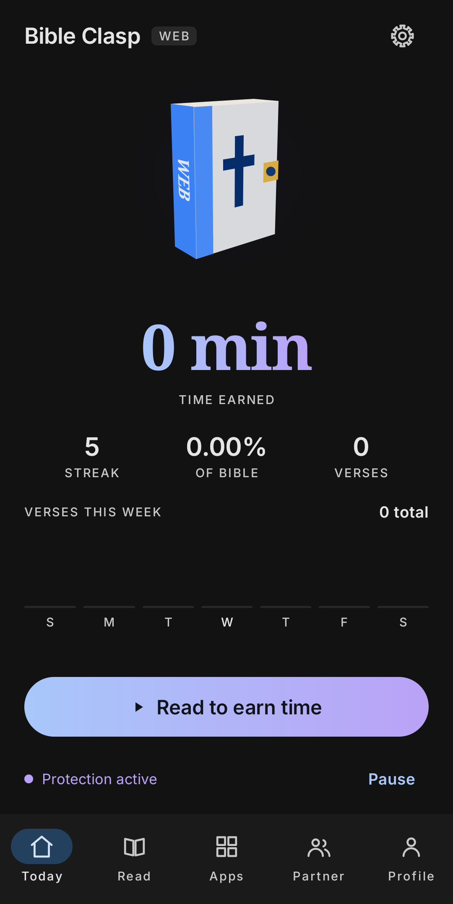
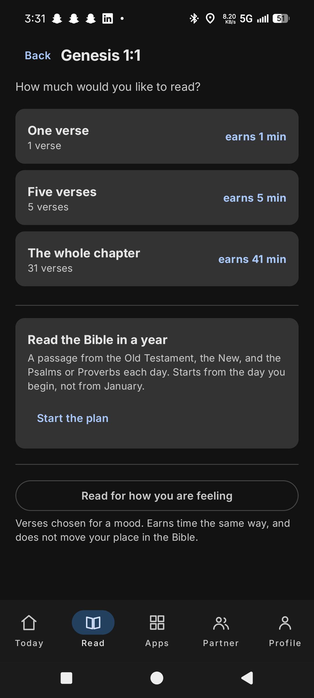
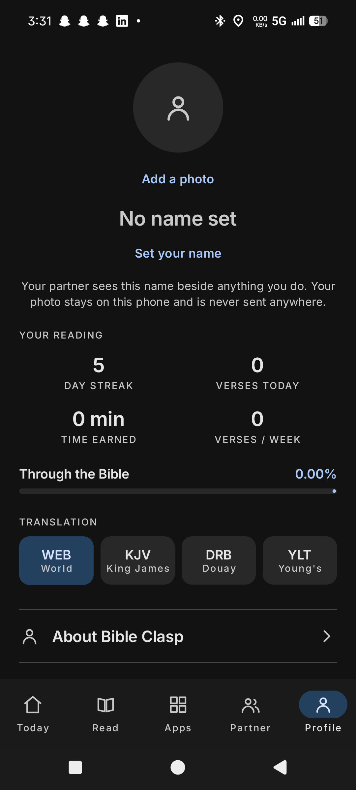

// android app - kotlin, jetpack compose
An Android app that puts a verse between you and the apps you lose hours to. You choose what to lock, and reading scripture is what buys the time back.
If you are testing Bible Clasp and something breaks, this files it straight onto the repo so it does not get lost in a text message. Fill this in and it opens a pre-filled GitHub issue.
This opens GitHub with the report already written out, so you can check it before posting. You will need a GitHub account, and the report is public.
Every app blocker I tried had the same problem: it tells you no, you get annoyed, and you turn it off. Blocking alone treats the symptom. I wanted the moment of friction to be worth something on its own, so instead of a wall, Bible Clasp puts a verse in the way and lets reading it earn the time back.
Put a moment of scripture in the way first, so the better choice is also the easier one.
from the app's About screenThat reframes the whole interaction. You are not being punished for opening an app. You are being offered a trade, and the trade is one you would probably say yes to if someone asked you directly.
01
Choose the apps that eat your time. Each one can also carry a small daily free allowance that gets spent before anything else.
02
Opening a locked app raises a screen with scripture on it. Reading pays into a shared time bank, and finishing a whole chapter pays a bonus on top of the verses.
03
Locked apps spend from that bank as you use them. Run it dry and the verse comes back.
04
Work through the Bible in order, follow a year-long plan, or pick verses chosen for a mood. Mood reading earns the same but does not move your place.



Left to right: the home screen with the time bank and protection toggle, choosing how much to read and what it earns, and reading stats with the translation picker.
Most of the difficulty in this app was not the reading loop. It was working inside Android's permission model and Google's policies without building something that would be rejected or that quietly stops working.
The obvious way to know which app is in front is an AccessibilityService, and I removed it. Google restricts that API to apps genuinely serving users with disabilities, and using it for app locking is one of the clearest routes to a Play Store rejection.
Instead the monitoring service polls UsageStatsManager.queryEvents, filtered to
foreground transitions. It needs the Usage Access permission, which is a settings screen rather
than a prompt, so onboarding has to explain itself properly.
Time is held in a single universal bank shared by every locked app, plus a per-app daily free allowance that is spent first. Keeping one bank rather than per-app balances means earning time anywhere makes it available everywhere, which is what people actually expect.
The subtle part is the low-time warning: it has to count both pots, or it fires while the user still has minutes left and reads as broken. Billing runs on the monotonic clock so changing the device time does not mint free minutes.
Verse pays 60s by default, a full chapter 600s, a sermon 30 minutesProtection you can silently disable is not protection. An optional partner is notified when protection is turned off, bypassed, or extended without reading, and can set rules the phone then applies. Both sides read the same event list through Firestore.
This was the hardest piece to verify because it only proves itself across two physical devices. Getting the security rules right was what unblocked it.
Verified end to end on two devicesThe only thing that ever leaves the device is what the accountability feature needs: the events a partner has to see. Your profile photo stays local and is never uploaded, and the app says so on the screen where you set it rather than burying it in a policy.
The four Bible translations ship inside the app as bundled files, so reading works with no network at all. An app that watches which other apps you open has to be conservative about what it sends anywhere, and the smallest defensible answer was to send almost nothing.
Reading works fully offlineUninstall protection is a device admin registration, which is enough to stop an impulse removal. There is a stronger tier built on Device Owner, but provisioning it requires a factory-reset device, so it stays clearly marked as untested on real hardware rather than advertised as working.
Honest limitation, documented rather than hiddenAndroid code is awkward to test when logic is tangled up with the framework, so the parts that matter are pulled out into plain Kotlin with no Android dependencies: day rollover, time budgeting, foreground tracking, formatting. Those are unit tested on the JVM and run in seconds.
The four translations ship as bundled JSON, so the app reads offline and never has to ask for network permission to do its main job.
Debug builds run on two devices with accountability pairing working end to end. What is left is the polish that decides whether people keep it installed: walking the reading screen properly, finishing the onboarding for the Usage Access permission, and a Play Store compliance pass before any submission.
The Android build is being tested on a small number of devices before it goes any wider. If you want to be one of them, leave your email and I will send you the install instructions when the next round opens.
Bible Clasp is free and there are no ads or subscriptions in it. If it has been useful to you and you want to help cover the developer account and hosting, anything is genuinely appreciated.